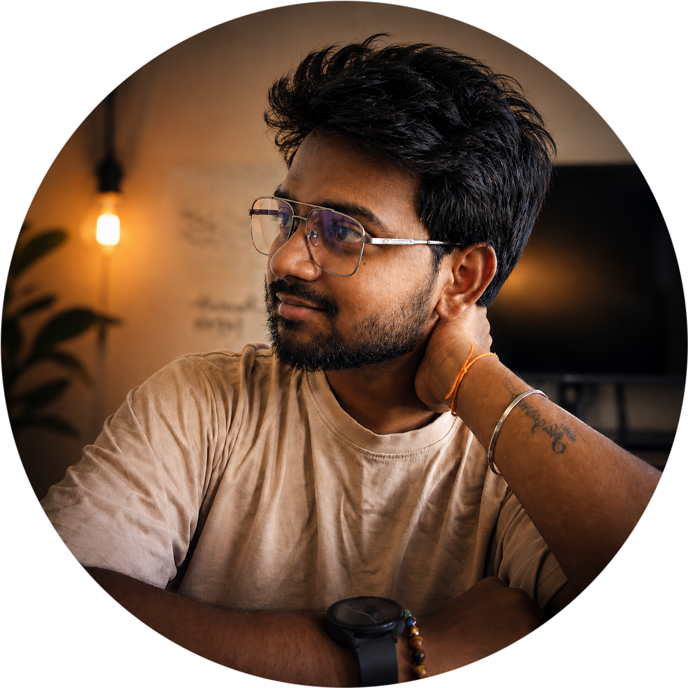
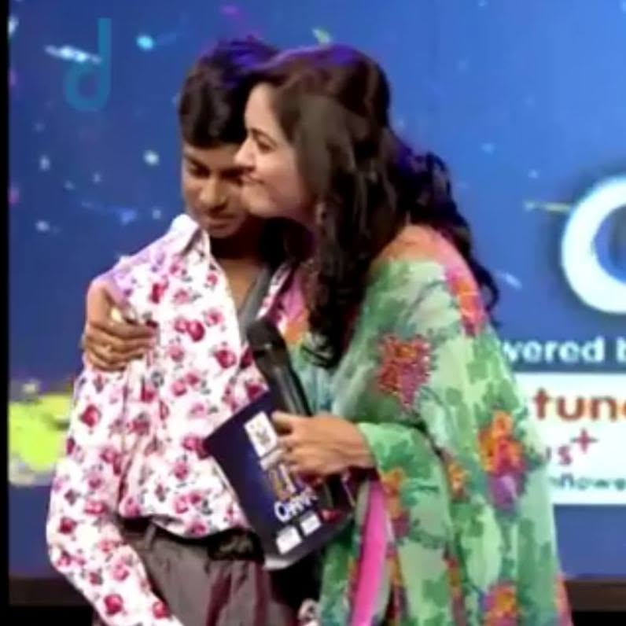
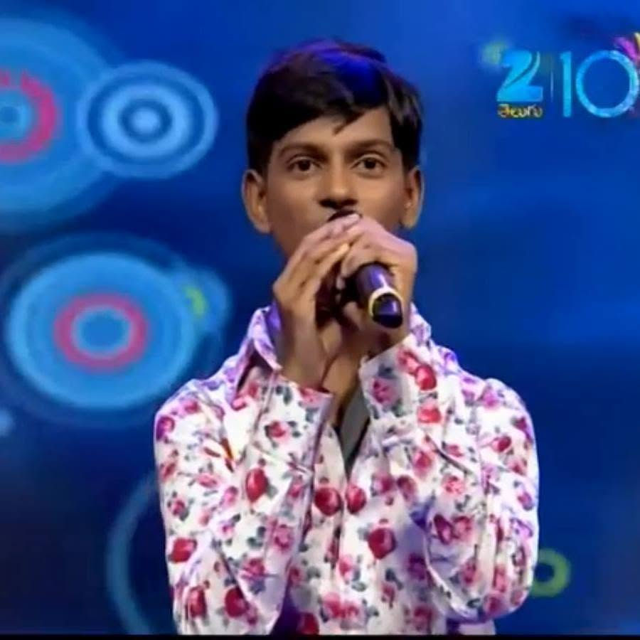
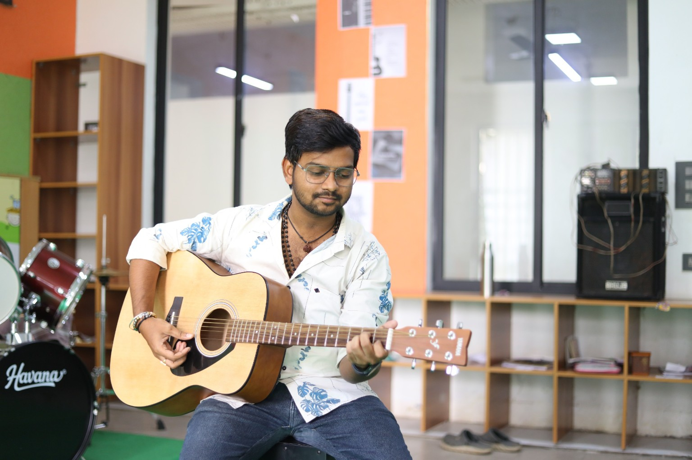
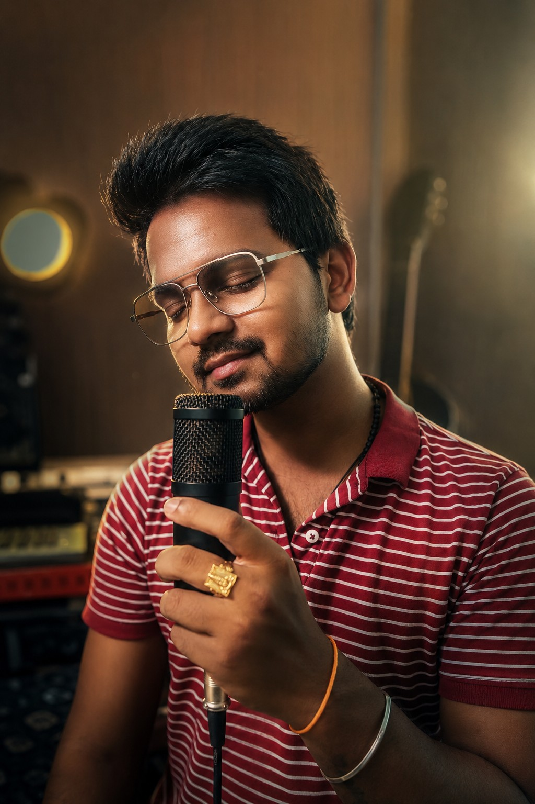

Music became more than an interest — it became my purpose. From performing on television to teaching students today, I continue to learn, perform and share music.

A journey from scientific research to full-time music education — bringing curiosity, discipline and creativity together.
Music transformed my interest into purpose.
I hold a Master's degree in Organic Chemistry and worked as a Junior Scientist at Laurus Labs. That experience gave me strong research, analytical and problem-solving skills, along with a solid scientific foundation and good depth in Biology.
But music has always been close to me. My passion for singing and learning music eventually became my profession, and today I am a full-time music teacher.
As an educator, I aim to make learning structured, practical and enjoyable — whether a student wants to sing, learn guitar, build confidence or simply discover a deeper connection with music.
Three selected videos — click any card to go directly to YouTube.
A selection of natural photographs from my television and performance journey.


Online and offline · Individual and group classes · Trial class available.
Build pitch, shruti, voice culture, breath control, expression and performance confidence.
Learn fundamentals, swaras, ragas, talam, notation and repertoire in a structured way.
Practical acoustic guitar lessons for accompaniment, chords and singing with confidence.
Choose one-to-one attention or learn together in a group setting, online or offline.
Experience the teaching style before you commit. Trial classes are available.
A glimpse of the learning experience — including a class session with a student.
A real class recording with a student. Natural, simple and focused on learning.
Cute and genuine moments from online classes can be added here as the gallery grows.
Enquire About ClassesA performance video from my musical journey.
Watch a performance from Shanmukh Puppala.
Natural photographs from singing, guitar and everyday music-making.


For classes, performances, collaborations or enquiries, reach out through email or my official link hub.